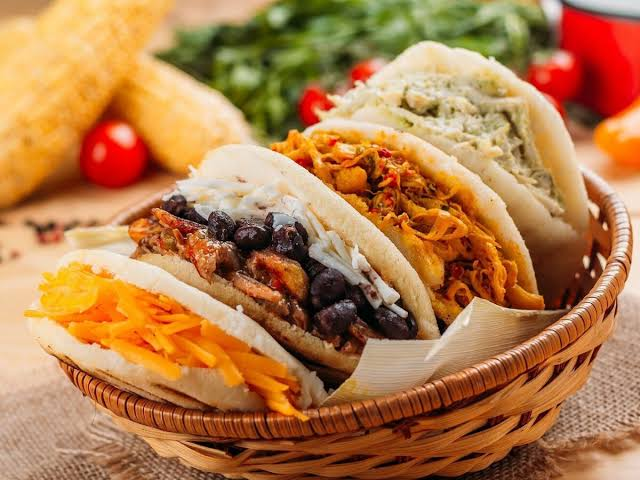

Arepas

Ingredientes
- 400 gramos de harina de maíz
- 375 ml de agua
- 250 ml de leche (Se puede sustituir por agua)
- 1 cucharadita de sal
- 1 cucharadita de mantequilla derretida (opcional)
- Aceite para engrasar la sartén
Preparación
- Pesar los ingredientes y ponerlos en un bol. Amasar bien hasta formar una masa que no se pegue. La dejamos reposar unos 10 minutos.
- Saldrá como un kilo de masa, por ello es recomendable hacer arepas medianas de unos 100 gramos. Hacemos una bola y las aplanamos para formar las arepas.
- Las dejamos reposar en un paño húmedo para que no se sequen.
- En una sartén untamos un poco de aceite y las cocinamos unos 5-6 minutos por cada lado, hasta que se forme una costra.
- Una vez hechas, las abrimos y las rellenamos con lo que más nos guste.